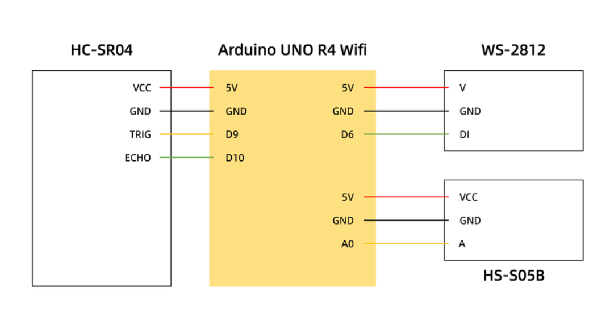

Arduino 硬件分析与智能灯光控制
✅ 作业清单
- 硬件选型与采购（WS2812灯环、HS-S05B超声波传感器、Arduino 板）
- 电路连接与调试
- Arduino 代码编写（传感器数据读取）
- 灯效控制与距离测量功能测试
- 整体封装与展示视频拍摄
🔨 HC-SR04、WS2812、HS-S05B - 制作过程记录
📌 第一步：硬件准备
采购 Arduino Uno R4 WIFI开发板、HC-SR04超声波传感器、WS2812灯环、HS-S05B声音传感器、面包板及杜邦线若干。
📌 第二步：电路搭建
按照电路图连接各模块：HC-SR04的VCC接5V、GND接地、TRIG接D9、ECHO接D10；WS2812灯环的VCC接5V、GND接地、DI接数字引脚D6；HS-S05B声音传感器的VCC接5V、GND接地、A接模拟引脚A0。

图1：Arduino 与 HC-SR04、WS2812、HS-S05B 连接示意图
📌 第三步：代码编写
编写 Arduino 代码实现：初始化 FastLED 库控制 WS2812 灯环；使用超声波传感器测量距离并控制灯光数量；通过声音传感器检测吹气触发旋转模式。
💡 AI 帮助编写代码
FastLED 库链接：https://github.com/dmadison/FastLED_NeoPixel
#include <FastLED.h>
// 灯环配置
#define NUM_LEDS 12
#define DATA_PIN 6
CRGB leds[NUM_LEDS];
// 超声波传感器引脚
#define TRIG_PIN 9
#define ECHO_PIN 10
// 声音传感器引脚
#define SOUND_SENSOR A0
// 模式变量
enum Mode { PROXIMITY, BLOWING };
Mode currentMode = PROXIMITY;
// 超声波相关变量
long duration;
int distance;
const int MAX_DISTANCE = 50; // 最大检测距离50cm
const int MIN_DISTANCE = 5; // 最小检测距离5cm
// 颜色状态
int colorState = 0; // 0:蓝色, 1:红色, 2:绿色
bool colorChanged = false;
// 吹气模式变量
unsigned long lastRotationTime = 0;
const int ROTATION_DELAY = 200; // 旋转延迟(毫秒)
int rotationOffset = 0;
// 声音检测
const int SOUND_THRESHOLD = 500; // 声音阈值，需要根据实际情况调整
unsigned long lastBlowTime = 0;
const unsigned long BLOW_MODE_DURATION = 5000; // 吹气模式持续时间5秒
void setup() {
// 初始化串口通信
Serial.begin(9600);
// 初始化超声波引脚
pinMode(TRIG_PIN, OUTPUT);
pinMode(ECHO_PIN, INPUT);
// 初始化声音传感器引脚
pinMode(SOUND_SENSOR, INPUT);
// 初始化LED灯环
FastLED.addLeds<WS2812, DATA_PIN, GRB>(leds, NUM_LEDS);
FastLED.setBrightness(100);
// 初始全部熄灭
clearLEDs();
FastLED.show();
}
void loop() {
// 检测声音
checkSound();
// 模式切换逻辑
if (currentMode == BLOWING && millis() - lastBlowTime > BLOW_MODE_DURATION) {
currentMode = PROXIMITY;
clearLEDs();
}
// 根据当前模式执行相应的灯光效果
if (currentMode == PROXIMITY) {
proximityMode();
} else {
blowingMode();
}
FastLED.show();
delay(50);
}
void checkSound() {
int soundValue = analogRead(SOUND_SENSOR);
if (soundValue > SOUND_THRESHOLD) {
currentMode = BLOWING;
lastBlowTime = millis();
rotationOffset = 0;
}
}
void proximityMode() {
// 读取超声波距离
digitalWrite(TRIG_PIN, LOW);
delayMicroseconds(2);
digitalWrite(TRIG_PIN, HIGH);
delayMicroseconds(10);
digitalWrite(TRIG_PIN, LOW);
duration = pulseIn(ECHO_PIN, HIGH);
distance = duration * 0.034 / 2;
// 限制距离范围
distance = constrain(distance, MIN_DISTANCE, MAX_DISTANCE);
// 计算要点亮的LED数量
int ledsToLight = map(distance, MIN_DISTANCE, MAX_DISTANCE, NUM_LEDS, 1);
ledsToLight = constrain(ledsToLight, 1, NUM_LEDS);
// 当所有LED都点亮时，准备切换颜色
if (ledsToLight == NUM_LEDS && !colorChanged) {
colorState = (colorState + 1) % 3;
colorChanged = true;
}
// 当LED数量减少时，重置颜色切换标志
if (ledsToLight < NUM_LEDS) {
colorChanged = false;
}
// 根据颜色状态设置颜色
CRGB currentColor;
switch (colorState) {
case 0: currentColor = CRGB::Blue; break;
case 1: currentColor = CRGB::Red; break;
case 2: currentColor = CRGB::Green; break;
}
// 清除所有LED
clearLEDs();
// 点亮相应数量的LED
for (int i = 0; i < ledsToLight; i++) {
leds[i] = currentColor;
}
// 串口输出调试信息
Serial.print("Distance: ");
Serial.print(distance);
Serial.print("cm, LEDs: ");
Serial.print(ledsToLight);
Serial.print(", Color: ");
Serial.println(colorState);
}
void blowingMode() {
if (millis() - lastRotationTime > ROTATION_DELAY) {
// 清除所有LED
clearLEDs();
// 设置三个色块，每个色块4个LED
for (int i = 0; i < NUM_LEDS; i++) {
int pos = (i + rotationOffset) % NUM_LEDS;
if (pos < 4) {
leds[i] = CRGB::Blue; // 蓝色块
} else if (pos < 8) {
leds[i] = CRGB::Red; // 红色块
} else {
leds[i] = CRGB::Green; // 绿色块
}
}
// 更新旋转偏移量
rotationOffset = (rotationOffset + 1) % NUM_LEDS;
lastRotationTime = millis();
}
}
void clearLEDs() {
for (int i = 0; i < NUM_LEDS; i++) {
leds[i] = CRGB::Black;
}
}📌 第四步：测试与调试
逐个测试各传感器功能：调整超声波传感器的测量精度，确保距离数据准确；调节声音传感器的阈值，避免环境噪音误触发；优化灯环颜色和亮度，使视觉效果更流畅。遇到问题：超声波测量偶尔不稳定，通过多次测量取平均值解决；声音传感器过于敏感，通过提高阈值和添加延时防抖解决。
HC-SR04、WS2812、HS-S05B - 最终成果展示
🔧 运用到的 Arduino 硬件分析
1. HC-SR04超声波传感器
HC-SR04是一款常用的超声波测距模块，通过发射40kHz超声波并接收回波来测量物体距离。其工作原理是：Trig引脚发送一个10μs的高电平触发信号，模块自动发射8个40kHz的方波，Echo引脚输出高电平，高电平的持续时间即为超声波往返时间。通过公式“距离 = (高电平时间 × 声速) / 2”可计算出距离（声速约为340m/s）。HC-SR04的测量范围为2cm至400cm，精度可达3mm，广泛应用于避障机器人、智能小车、液位检测及距离感应等场景。
2. WS2812灯环
WS2812灯环是将多颗可寻址LED集成于一体的环形RGB灯板，每颗灯珠内置驱动芯片，仅需一根信号线即可独立控制每颗灯珠的任意颜色和亮度。使用时将VCC接5V、GND接地、DI接Arduino的数字引脚，配合FastLED库即可轻松实现跑马灯、呼吸灯等炫彩效果。常用于指示灯、氛围灯、创意装饰及互动灯光项目中。
3. HS-S05B声音传感器
HS-S05B声音传感器是一种高灵敏度的声音检测模块，能够识别环境中的声音信号，如拍手声、吹气声等。使用时将VCC接5V、GND接地、A接Arduino的模拟输入引脚，通过analogRead()函数读取声音强度值，可根据阈值判断是否检测到声音。常用于声控开关、互动装置、音乐节奏检测及语音控制等场景。
应用场景展示
通过HC-SR04超声波传感器测量距离，根据距离远近动态控制WS2812灯环点亮的LED数量和颜色；同时通过HS-S05B声音传感器检测吹气声音，触发灯环旋转模式。装置可用于创意装饰、智能感应灯、互动展示等场景，实现距离感应和声控互动的双重功能。

图1：WS2812和HS-S05B 应用场景展示